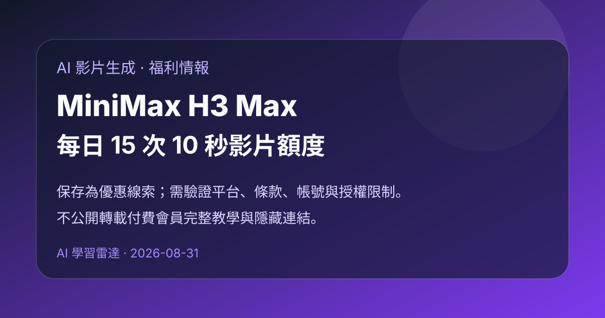

Prompt Case｜MiniMax H3 Max 每日 15 次 10 秒影片免費額度：AI 影片生成福利線索

一句話摘要
Prompt Case 會員信提到一個 MiniMax H3 Max 影片生成免費額度線索：每日約 15 次、每次可生成 10 秒 768p 高清影片，且包含聲效；信中宣稱生成速度大約 15 秒內完成。
原始訊息重點
使用者提供的信件摘要包含以下資訊：
- 主題：價值約 360 美元的免費福利，每天可使用 15 次 MiniMax H3 Max 10 秒高清影片生成。
- 模型／服務：MiniMax H3 Max。
- 生成規格：10 秒影片、768p、含聲效。
- 速度描述：約 15 秒內生成一段影片。
- 額度描述：每天 15 次；信中提到切換另一個帳戶可獲得新限額。
- 價值換算：依信中引用的 MiniMax H3 Max 官方 API 價格，約每天 12 美元、每月 360 美元。
為什麼值得保存
- 對課程、社群短影音、AI 工具教學與知識庫封面影片製作有立即測試價值。
- 若額度真能每日重置，適合做「低成本影片 prompt 測試」與「多版本分鏡快速試錯」。
- 這類福利通常有時效性，保存後可提醒後續快速驗證可用性、限制與是否仍開放。
查證與風險提醒
完整操作連結與教學位於付費會員內容，本文不公開轉載隱藏連結或完整步驟，只保存可公開的摘要與查證方向。
建議後續確認：
- 免費額度是否仍有效，是否需登入特定平台或綁定 Google 帳號。
- MiniMax H3 Max 的「15 次／日」是否是平台活動、第三方 wrapper 額度，或官方 API 額度。
- 生成影片是否可商用、可下載、是否帶浮水印，以及輸出授權條款。
- 多帳號切換是否違反平台服務條款；若違反，不應作為正式工作流。
- 實測生成速度、排隊時間、畫質、聲效穩定性、中文 prompt 遵從度。
可延伸成的 AI 學習雷達任務
- 做一組「同 prompt 不同影片模型」比較：MiniMax H3 Max、Seedance、Veo、Runway、Kling。
- 建立 10 秒短影片 prompt 模板：產品展示、課程開場、知識卡動畫、旅遊氛圍片。
- 若福利可用，整理成私密操作備忘；若來源限制付費會員，公開版只保留評測結果與合規提醒。
來源
來源類型：Prompt Case 會員信／應用程式文章摘要。
日期：2026-08-31。
備註：信件底部含個人收件資訊，已排除不公開保存。